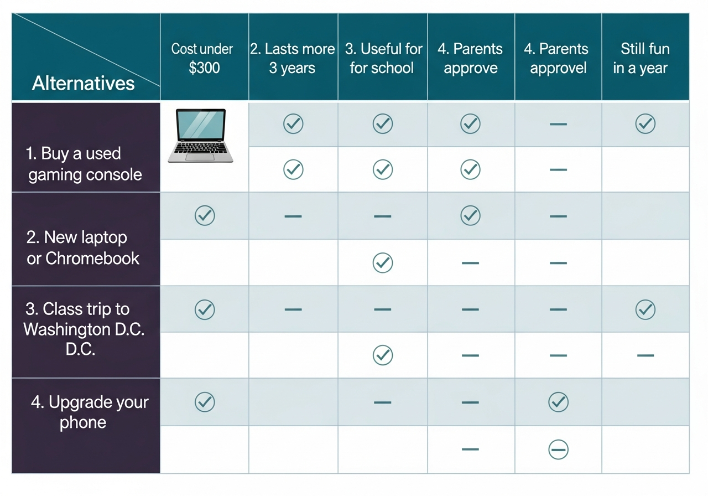
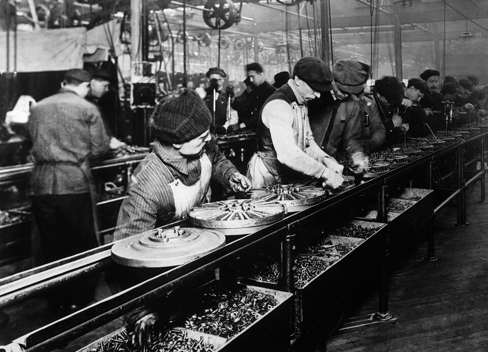

1.2 Making Choices: Opportunity Cost, Trade-offs, and Economic Growth
- The production possibilities curve (PPC) shows every efficient combination of two goods when resources are fully employed. On the curve = efficient; inside = wasted resources; outside = currently impossible.
- Opportunity cost is the value of the next best alternative given up - not all alternatives, just the single best one passed on.
- Trade-offs are all the alternatives not chosen. Good decision-making requires thinking through them before committing - a decision grid helps.
- Economic growth shifts the PPC outward through more resources, better capital, higher productivity, or greater investment in human capital (education and skills).
- Division of labor and specialization dramatically boost productivity but create economic interdependence - people rely on each other for almost everything.
- Cost-benefit analysis: if expected benefits exceed expected costs, the action makes economic sense.
Tap a term for its definition.
-
Definition: A diagram showing all possible combinations of two goods an economy can produce when all resources are fully and efficiently employed.
-
Definition: The value of the next best alternative given up when one choice is made rather than another.
-
Definition: All the alternatives that must be given up when a choice is made - every option not selected.
-
Definition: A sustained increase in a nation's total output of goods and services over time; shifts the PPC outward.
-
Definition: A measure of the amount of output produced with a given amount of resources in a specific period of time.
-
Definition: The sum of people's skills, abilities, health, knowledge, and motivation - everything that makes a worker more productive.
-
Definition: Organizing work so that each worker or group completes a separate part of the overall task.
-
Definition: Assigning tasks to the workers, regions, or nations that can perform them most efficiently.
-
Definition: The mutual reliance between people, businesses, regions, and nations for most of the goods and services they consume.
-
Definition: A simplified graph, equation, or diagram that shows how something in the economy works by stripping away complexity.
-
Definition: A decision-making strategy that explicitly compares expected costs to expected benefits before acting.
Scarcity means every choice closes off other possibilities. What gets given up is not truly free - it has a name and a cost. This section covers the tools economists use to think clearly about choices: the production possibilities curve, opportunity cost, trade-offs, and cost-benefit analysis. It also examines how economies grow over time and how specialization connects individuals into a larger economic system.
The Production Possibilities Curve
A powerful tool for visualizing scarcity's limits is the production possibilities curve (also called the production possibilities frontier, or PPC).
A production possibilities curve is a diagram that shows all possible combinations of two goods (or categories of goods) that an economy can produce when all of its resources are fully and efficiently employed. To keep it simple, economists imagine a country called Alpha that produces only two products: cars and clothing.
Reading the curve
Every point on the curve represents a combination that uses all available resources efficiently:
- Point A - on the curve: Alpha produces 70 cars and 300 units of clothing. All resources fully used. Efficient.
- Point B - on the curve: Alpha shifts resources toward clothing - 40 cars and 400 units of clothing. Still efficient, different mix.
- Inside the curve: Some resources are idle (workers are unemployed, land is unused). Less than maximum output. Inefficient and wasteful.
- Outside the curve: Impossible to reach with current resources and technology. No combination of choices gets you there today.
The curve bows outward because resources are not perfectly interchangeable. Shifting more and more workers from car production to clothing eventually means pulling in workers who are far better suited for cars, so clothing output gains get smaller while car losses get larger. This is the law of increasing opportunity costs.
Opportunity Cost - The Real Price of Every Choice
Every choice has a cost - not just in dollars, but in what was given up to make it. That "what was given up" has a name: opportunity cost - the value of the next best alternative not chosen.
On the production possibilities curve: when Alpha moves from Point A to Point B, it gains 100 more units of clothing. The opportunity cost is the 30 cars that had to stop being produced to free up those resources. An economy cannot have more of one good and keep the same amount of the other when all resources are already in use.
Opportunity cost is everywhere:
- A student spends Saturday studying. The opportunity cost is the time with friends - or sleep - that was given up.
- The federal government spends $800 billion on defense. The opportunity cost is whatever else that money could have funded - roads, education, or tax cuts.
- A student attends a four-year college. The opportunity cost includes the full-time wages that could have been earned instead - often $100,000 or more over four years.
Opportunity cost is not all the alternatives passed up - it is specifically the next best one. If the options are (1) study, (2) hang out with friends, and (3) sleep, and the choice is to study, the opportunity cost is only the next favorite option - say, sleep. "Hang out with friends" is a trade-off, but not the opportunity cost.
Idle resources have opportunity costs too
If Alpha is at Point B and workers in the clothing industry go on strike, output drops to a point inside the curve. The opportunity cost of those idle workers is the clothing output that was never produced. Any time resources are underemployed - unemployed workers, unused factories, fallow farmland - the economy pays an invisible opportunity cost in lost production.
Trade-Offs and Decision-Making
Trade-offs are all the alternatives given up when making any choice. Good decision-making means thinking through them before committing. One tool is a decision-making grid: list the options in rows and the criteria that matter in columns (price, durability, convenience). Score each option against each factor. The one that scores best across the most factors is usually the right pick.

A decision-making grid in action. Each alternative gets scored against every criterion. The option that checks the most boxes, here, the laptop, is the rational choice. Notice that the gaming console scores well on some criteria but poorly on the ones that matter most for this decision. Diagram by course author.
The same logic applies whether the decision is buying a laptop, choosing a college, or evaluating a business investment. The criteria get more complex at larger scales, but the process is identical.
Consumers shape the entire economy through their trade-off decisions. When millions of people decide to buy streaming services instead of cable TV, resources shift. When consumers collectively choose electric vehicles over gasoline cars, the entire auto industry - and the energy industry - responds. Consumers collectively decide where a country sits on its production possibilities curve.
Economic Growth - Expanding the Frontier
Everything so far has been about choices within a fixed frontier. But over time, economies can move the entire frontier outward. That is economic growth: a sustained increase in a nation's total output of goods and services over time.
Growth matters for two reasons: (1) because of scarcity, people always want more than they have now; and (2) as populations grow, there will be even more people needing goods and services in the future. Growth is not free, though. To grow tomorrow, an economy often must sacrifice consumption today - a student spending four years in college, a business reinvesting profits into new equipment rather than distributing them, a government funding research instead of current spending.
Drivers of economic growth
Four forces push the PPC outward:
- More resources - population growth, new natural resource discovery, immigration
- Better capital - new factories, machines, and technology
- Higher productivity - producing more output with the same inputs. If a factory produces 5,000 pencils per hour on Monday and 5,100 on Tuesday using the same workers and machines, productivity rose 2%.
- More human capital - a better-educated, healthier, more motivated workforce. Human capital is the sum of people's skills, knowledge, abilities, health, and motivation - everything inside the worker's head and body that makes them productive.
Education is the most reliable investment in human capital. U.S. Bureau of Labor Statistics data shows that workers without a high school diploma earned a median $488 per week in 2014, while college graduates earned $1,101 - more than twice as much - and had an unemployment rate of 3.5% versus 9.0% for non-graduates. Few investments in life pay off more consistently than education.
Division of Labor, Specialization, and Interdependence
Productivity also rises when work is divided up. Division of labor is organizing work so that each worker or group completes a separate, specialized part of an overall task. When workers are assigned the specific tasks they do best, the result is specialization - and output per worker increases dramatically.

Henry Ford's moving assembly line at Highland Park, Michigan, 1913. Each worker added one component as the car moved past them - cutting assembly time from over 12 hours to 93 minutes per car. Public domain.
Before Ford's assembly line, a small crew assembled each car completely from scratch - roughly a day and a half per car. Ford broke the process into dozens of small, repetitive tasks, one per worker. Assembly time dropped to 93 minutes. The price of a Model T fell by more than 50 percent, putting a car within reach of ordinary families for the first time.
The tradeoff is economic interdependence - when specialization is high, everyone relies on others for almost everything they consume. A typical person does not grow their own food, make their own clothes, or build their own phone. They specialize in one job, earn income, and buy everything else from others who specialize in producing it. This makes the whole system more productive - but it also means a disruption in one place (a supply chain breakdown, a port strike, a pandemic) ripples across the entire economy.
Economists view interdependence as mostly positive: productivity and income gains from specialization almost always outweigh the risks. And there is a peace dividend too - countries that trade heavily with each other rarely go to war, because the economic cost of conflict becomes too high.
Economic Models and Cost-Benefit Analysis
Economists make sense of complex systems using economic models - simplified graphs, equations, or diagrams that show how something works by stripping away noise to reveal the underlying logic. The PPC is one example. Models are built on assumptions - propositions accepted as true to make the model manageable (for example, "Alpha only produces two goods"). A model's usefulness depends on whether those assumptions are reasonable.
Cost-benefit analysis
Cost-benefit analysis is exactly what it sounds like: explicitly list the expected costs of an action, explicitly list the expected benefits, and compare them. If benefits exceed costs, the action makes sense. If costs exceed benefits, skip it. You can also use it to choose between two options: divide benefits by costs for each option and pick the one with the better ratio.
A third strategy is incrementalism: take small, careful steps rather than giant leaps. Test a small amount before committing fully - a sip of a hot drink before gulping it, a small pilot program before a company-wide rollout. Each step gives you better information about whether to take the next one.
Quick recap before the quiz
- The PPC shows every efficient combination of two goods when resources are fully employed. On the curve = efficient; inside = idle resources; outside = currently impossible.
- Opportunity cost = the next best alternative given up. Not all alternatives - just the single best one passed on.
- Trade-offs = all the alternatives not chosen. Good decisions require thinking through them first.
- Economic growth shifts the PPC outward through more resources, better capital, higher productivity, or greater human capital investment.
- Division of labor + specialization boost productivity but create economic interdependence.
- Cost-benefit analysis: if benefits exceed costs, do it. If not, do not.
These videos will help you review Making Choices: Opportunity Cost, Trade-offs, and Economic Growth and solidify key concepts before your exam.
- $20,000 - the revenue she earned
- $70,000 - the difference between her old salary and her startup revenue
- $90,000 - the salary she gave up
- Zero - she chose freely, so there is no cost
- An economy where some resources are idle or wasted
- The most efficient possible use of resources
- A combination that is currently impossible to reach
- Future economic growth
- Human capital investment
- Division of labor and specialization
- Consumer rights
- Cost-benefit analysis
- A country producing all the goods it needs without any trade
- The government controlling all production decisions
- A single business dominating an entire industry
- The mutual reliance of individuals, businesses, and nations on each other for goods and services
- The production possibilities curve shifts inward
- The economy moves to a point inside the PPC
- The production possibilities curve shifts outward (economic growth)
- Opportunity costs disappear
- Consumerism
- Division of labor
- Productivity
- Opportunity cost
- Reject the project - any cost is unacceptable
- Approve the project - benefits ($8M) exceed costs ($5M)
- Reject the project - $5 million is too large a trade-off
- Ask the government to make the decision
- The studying that was passed on
- Both studying and sleeping, since both were given up
- Zero - the concert was free
- The combined value of all alternatives not chosen
- The production possibilities curve has shifted outward through human capital investment
- The economy has moved to a point inside its current PPC
- The PPC has shifted inward because resources were consumed
- Division of labor has eliminated all opportunity costs
- Because government regulations require simplified models
- Because real economies are actually this simple
- Because the math only works with two goods
- Because stripping away complexity reveals the underlying logic of trade-offs more clearly